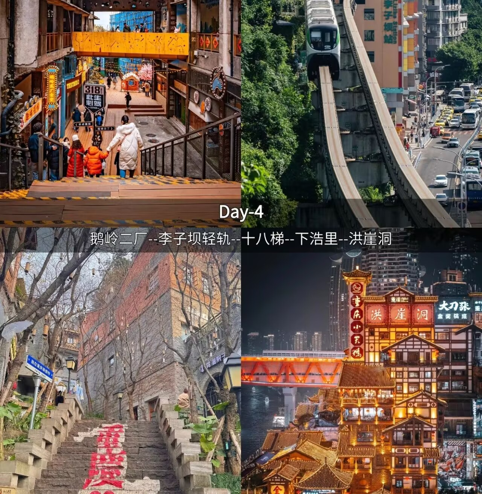
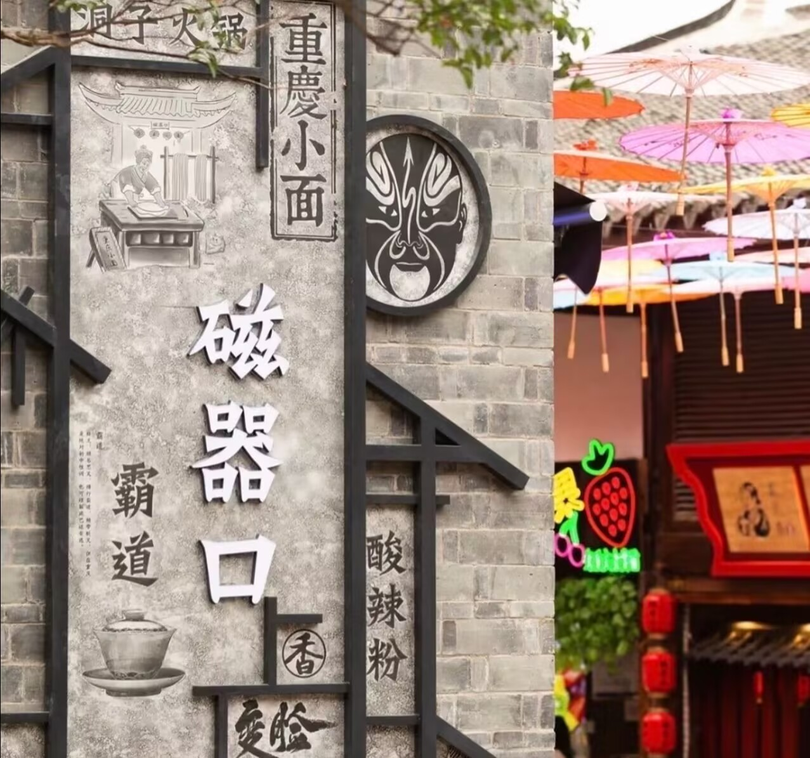
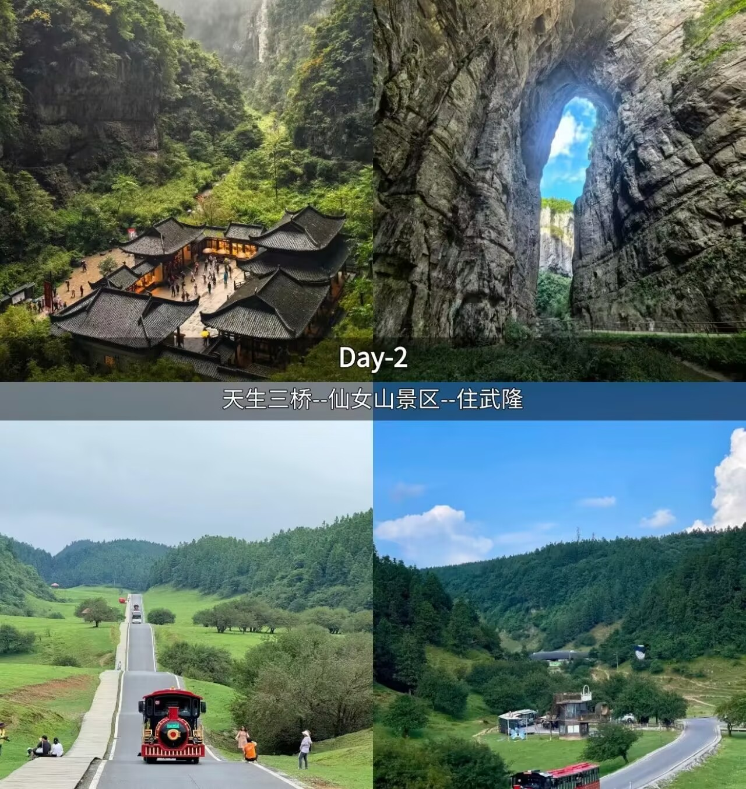

🏙️ 魔幻都市一日游
打卡8D魔幻地标，感受山城心跳
- 上午 李子坝轻轨穿楼 → 鹅岭二厂文创园
- 中午 解放碑商圈品尝重庆小面
- 下午 洪崖洞吊脚楼群 → 长江索道
- 晚上 南山一棵树观景台看夜景
⭐ 亮点：轻轨穿楼、洪崖洞夜景、空中索道

打卡8D魔幻地标，感受山城心跳
⭐ 亮点：轻轨穿楼、洪崖洞夜景、空中索道

穿越千年古镇，感受巴渝文化
⭐ 亮点：三大国家级非遗一次集齐，亲手拓印年画

世界遗产·电影取景地·极限挑战
⭐ 亮点：世界自然遗产、喀斯特地貌奇观